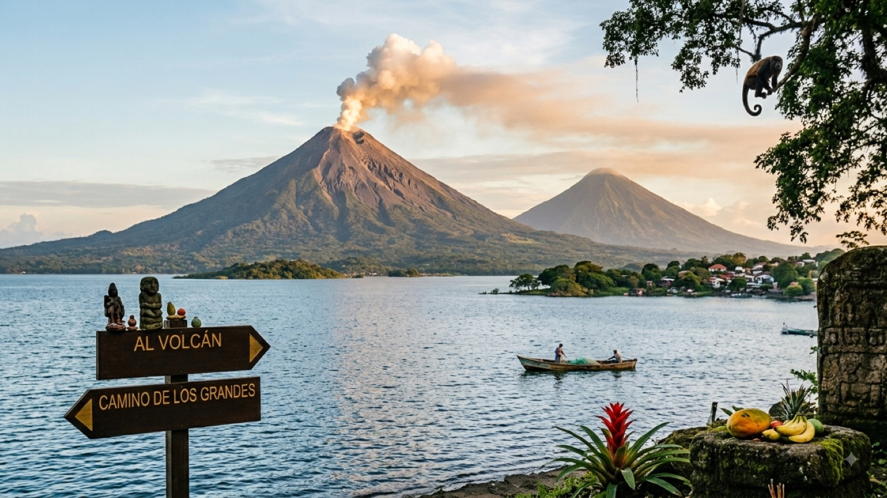

טיול בניקרגואה 2026 — המדריך המלא

ניקרגואה היא המדינה שמחזירה לכם את ההרגשה שהגעתם ראשונים. אגם מתוקים בגודל של מדינה קטנה, ובאמצעו אי שנוצר משני הרי געש שצמחו זה לצד זה; עיירה קולוניאלית בצהוב ובוורוד שנראית כאילו מישהו שכח לגבות עליה כניסה; והר געש שחור לגמרי שאפשר לגלוש במורדו על לוח עץ, בעמידה, במהירות שאף אחד לא באמת מודד.
בשביל מטיילים ישראלים ניקרגואה יושבת בדיוק באמצע הגל היורד — אחרי גואטמלה והונדורס, ורגע לפני קוסטה ריקה. היא גם התחנה שבה התקציב מתאושש: אחרי ניקרגואה יגיע השוק היקר של קוסטה ריקה ופנמה, וכאן עדיין אפשר לישון, לאכול ולנוע בפחות מ-30 דולר ביום. המדריך הזה מרכז את מה שצריך לדעת — כולל מה שכדאי לבדוק לפני שקונים כרטיס.
מתי כדאי לנסוע לניקרגואה?
ניקרגואה חמה כמעט תמיד. ההבדל בין העונות הוא לא בטמפרטורה אלא בכמות הגשם ובמצב הדרכים.
העונה היבשה (נובמבר–אפריל) היא שיא העונה. שמיים בהירים, שבילי הרי געש יבשים, דרכי העפר של אומטפה עבירות ואפשר לראות למרחק מפסגות. החיסרון: זה גם החם והמאובק ביותר, במיוחד במרץ ובאפריל, וההוסטלים בסן חואן דל סור ובגרנדה מתמלאים סביב דצמבר–ינואר.
עונת הגשמים (מאי–אוקטובר) פחות מאיימת ממה שהיא נשמעת. הגשם מגיע בדרך כלל בהתפרצות אחר צהריים חזקה וקצרה, והבקרים בהירים. הנוף ירוק, ההוסטלים זולים ופנויים, והחסרונות אמיתיים אך מקומיים: דרכי עפר בוציות, ים סוער מדי לחצייה לאיי קורן וספטמבר–אוקטובר כחודשים הגשומים והסוערים ביותר.
נקודה שמפתיעה רבים: גולשים דווקא מגיעים בעונת הגשמים. הרוח היבשתית באזור פופויו וסן חואן דל סור נושבת נגד הגלים כמעט כל השנה, והסוול הטוב ביותר מגיע בערך באפריל–אוקטובר. אם באתם בשביל הגלים, החורף הישראלי הוא לא בהכרח העיתוי הנכון.
ויזה, כניסה ומעברי גבול
בעלי דרכון ישראלי לא צריכים ויזה מראש ומקבלים בדרך כלל 90 יום בכניסה. הדרכון צריך להיות בתוקף לפחות שישה חודשים, ובגבול היבשתי גובים אגרות קטנות במזומן — סדר גודל של כמה דולרים ביציאה מהמדינה השכנה ועוד סכום דו-ספרתי נמוך בכניסה לניקרגואה. שמרו שטרות דולר קטנים בכיס.
הנקודה שרוב המטיילים מפספסים: ניקרגואה חתומה על הסכם CA-4 יחד עם גואטמלה, הונדורס ואל סלבדור. ארבע המדינות מתייחסות לתשעים הימים כאל מכסה משותפת אחת — כלומר מעבר מהונדורס לניקרגואה לא מאפס את הספירה, גם אם קיבלתם חותמת חדשה. אם שרפתם שישים יום בגואטמלה, נשארו לכם שלושים למרכז אמריקה כולה. כדי לאפס את המונה צריך לצאת ליעד מחוץ להסכם — קוסטה ריקה, פנמה, בליז או מקסיקו — ולחזור.
מעברי הגבול המרכזיים:
- לקוסטה ריקה: פניאס בלנקאס (Peñas Blancas) — המעבר הראשי, על הכביש הפאן-אמריקאי דרומית לריבאס. עמוס, מסודר יחסית, ולעיתים קרובות איטי; הגיעו מוקדם ושריינו שעתיים-שלוש. מעבר משני ושקט יותר הוא לאס טבליאס (Las Tablillas) בצפון קוסטה ריקה.
- להונדורס: גואסאולה (Guasaule) — הנוח ביותר לכיוון לאון ולחוף; אל אספינו (El Espino) — לכיוון סומוטו ואסטלי; ולאס מאנוס (Las Manos) — המעבר לכיוון טגוסיגלפה.
- שאטלים ישירים: חברות שאטל תיירותיות מפעילות קווים ישירים גרנדה או סן חואן דל סור–לה פורטונה ולה פורטונה–מונטוורדה, ובחלקם מטפלים עבורכם בניירת בגבול. יקר יותר מאוטובוס ציבורי, וחוסך חצי יום של כאב ראש.
נוסעים לחוף? יש גם מסלול נדיר ויפה: מעבר סן קרלוס בדרום-מזרח, על נהר סן חואן, עבור מי שמגיע מאזור אל קסטיו.
כמה עולה טיול בניקרגואה?
ניקרגואה היא המדינה הזולה ביותר במרכז אמריקה, ולעיתים קרובות הזולה ביותר בכל המסלול. הפער מול קוסטה ריקה, שנמצאת שעתיים נסיעה משם, הוא הלם ממש: אותו סוג של חוף ושל יער גשם, בשליש עד חצי מהמחיר. המטבע הוא קורדובה (Córdoba, NIO), ושער החליפין נע סביב 36–37 קורדובה לדולר. דולרים מתקבלים כמעט בכל מקום, אבל העודף יחזור בקורדובות ולפי שער נדיב פחות.
| הוצאה | מחיר משוער |
|---|---|
| מיטה בחדר משותף בהוסטל | 7–13$ (250–480 קורדובה) |
| חדר פרטי בסיסי | 20–35$ |
| ארוחה בקומידור מקומי (עם גאיו פינטו) | 2.5–4.5$ (90–160 קורדובה) |
| ארוחה במסעדה תיירותית | 7–12$ |
| בירה טוניה / ויקטוריה | 1–2$ |
| נסיעה בצ׳יקן באס | 0.5–2$ (לרוב פחות מדולר לשעה) |
| שאטל תיירים בין ערים | 15–35$ |
| מעבורת סן חורחה–אומטפה (כיוון אחד) | 2–5$ |
| סנדבורד על סרו נגרו (כולל הסעה וציוד) | 30–40$ |
| שיעור גלישה או השכרת גלשן ליום | 10–25$ |
| טיסה פנימית מנגואה–איי קורן (הלוך ושוב) | 150–200$ |
שורה תחתונה: מטייל תרמילאי סביר מוציא 25–35 דולר ביום כולל לינה, אוכל ותחבורה. שבועיים בניקרגואה עם סנדבורד, כמה ימי גלישה וסיורים יסתכמו בסביבות 500–700 דולר לאדם — פחות ממה שיעלה שבוע אחד בקוסטה ריקה. אם התקציב שלכם ליבשת נשחק, זה המקום להאט ולהישאר.
איך מתניידים בניקרגואה?
המרחקים קטנים — כמעט כל המסלול התרמילאי דחוס ברצועה מערבית אחת בין לאון לגבול קוסטה ריקה, ואפשר לחצות אותה ביום נסיעה.
צ׳יקן באס (rutas) — אותם אוטובוסי בית ספר אמריקאיים ותיקים שמכירים מגואטמלה, כאן בצבעים אפילו יותר עזים. עוצרים בכל מקום, נדחסים מעבר לכל היגיון, ועולים גרושים. בין ערים גדולות יש גם expresos — מיניוואנים מהירים יותר שיוצאים כשהם מתמלאים. שיטת העבודה בניקרגואה היא לרוב מעבר דרך תחנת מרכז (ריבאס, מסאיה או מנגואה), אז נסיעה שנראית קצרה במפה יכולה לכלול החלפה.
שאטלי תיירים — מיניוואנים בין נקודות המסלול: לאון–גרנדה, גרנדה–סן חואן דל סור, ומשם לגבול. יקרים פי עשרה מהאוטובוס, אוספים מההוסטל וחוסכים שעתיים ושתי החלפות. הבחירה הנכונה עם ציוד גלישה או בנסיעות ארוכות במיוחד.
סירות — הפרק שהופך את ניקרגואה למיוחדת. לאומטפה מפליגים מסן חורחה (ליד ריבאס), כשעה, כמה יציאות ביום, והמעבורות הגדולות לוקחות גם רכבים ואופנועים. לאיי קורן בקריביים יש שתי אפשרויות: טיסה קצרה ממנגואה לביג קורן (סביב שעה), או המסלול היבשתי-ימי הארוך דרך אל ראמה ובלופילדס — זול בהרבה, לוקח יום שלם ומעלה, ומתאים למי שיש לו זמן וסקרנות. מביג קורן ללִיטְל קורן יוצאת פנגה מהירה, כחצי שעה של קפיצות על הגלים.
המסלול המומלץ — 12 יום בניקרגואה
המסלול בנוי בכיוון הגל היורד — כניסה מהונדורס בצפון ויציאה לקוסטה ריקה בדרום — אבל עובד מצוין גם הפוך:
- ימים 1–3 · לאון — עיר אוניברסיטאית לוהטת, מלאת ציורי קיר וכנסיות, עם גג קתדרלה לבן שאפשר לעלות עליו ולראות שרשרת הרי געש שלמה. הבסיס לסנדבורד על סרו נגרו, ולנסיעה קצרה לחוף לאס פניטאס לשקיעה.
- יום 4 · לאון → לגונה דה אפויו — נסיעה דרומה אל אגם קרטר עגול ושקט, מים חמימים ושקופים, קיאקים והוסטלים על שפת המים. יום אחד בלגונה מספיק לרוב, ובכל זאת מעטים עוזבים בזמן.
- ימים 5–6 · גרנדה ומסאיה — העיר הקולוניאלית היפה במרכז אמריקה, בצהוב, בכחול ובוורוד; סיור סירות באיסלטס שבאגם; ובלילה אפשרות לעלות אל הר הגעש מסאיה ולהביט אל תוך אגם לבה בוער — כשהוא פתוח לביקורים, מה שמשתנה לפי הפעילות הגעשית.
- ימים 7–9 · אי אומטפה — שני הרי געש שיוצאים ישר מתוך האגם. טיפוס אל קונספסיון או אל מדראס (יום מלא, עם מדריך), מעיין אוחו דה אגואה, מפל סן רמון, ובעיקר קצב חיים שמאט לחלוטין. זה בדרך כלל החלק שמאריכים בו.
- ימים 10–12 · סן חואן דל סור והחופים — עיירת נמל צבעונית שהפכה לבירת הגלישה והלילה. הגלים עצמם לא בעיר אלא בחופים שמסביב: מדרס וריו לגונה ללימוד, מנזניו ומרסייה למתקדמים. משם קרוב לגבול פניאס בלנקאס.
יש עוד כמה ימים? שלוש תוספות טובות: פופויו, אזור גלישה מבודד יותר צפונית לסן חואן דל סור, למי שרוצה גלים בלי מסיבות; איי קורן בקריביים, שהם עולם אחר לגמרי — קריאולית, ריקות ובלי כמעט כלי רכב — ודורשים לפחות ארבעה עד חמישה ימים כדי שיהיו שווים את הדרך; ואזור מטגלפה והצפון, עם חוות קפה, אקלים קריר וקניון סומוטו, שהוא אחד המקומות הפחות מתויירים במסלול.
מה חובה לראות בניקרגואה?
חמש החוויות שכמעט אף אחד לא מוותר עליהן:
- סנדבורד על סרו נגרו — הר געש צעיר ושחור לחלוטין ליד לאון. עולים כשעה ברגל עם לוח עץ על הגב, לובשים אוברול, ויורדים במורד המדרון הגעשי — בישיבה או בעמידה, לפי רמת האומץ. חוויית האדרנלין החתומה של המדינה.
- אי אומטפה — שני הרי געש בתוך אגם מתוקים, מחוברים בגשר יבשה צר. אפשר לטפס, אפשר לצוף באוחו דה אגואה, ואפשר פשוט לשכב בערסל ולא לעשות כלום — כולן תשובות נכונות.
- גרנדה — רחובות קולוניאליים בצבעי גלידה, מגדל פעמונים עם נוף לאגם ולהר הגעש מומבצ׳ו, וקפה בפאטיו פנימי בשעה שהחום שובר שיאים.
- לגונה דה אפויו — לוע געש כבוי שהתמלא במים חמימים וצלולים. חצי שעה מגרנדה, וכמעט בלתי אפשרי לצאת ממנו לפני השקיעה.
- איי קורן — קריביים אמיתי בלי תשתית של קריביים: ליטל קורן היא אי בלי כבישים סלולים, עם שוניות לצלילה ובקתות על החול. הכי רחוק מכל השאר, והכי שונה.
בטיחות בניקרגואה — מה באמת צריך לדעת
כאן צריך להיות מדויקים, כי התשובה מורכבת משני דברים שונים לגמרי.
הפן הפוליטי. מאז משבר 2018, שבו הפגנות המוניות דוכאו בכוח, ניקרגואה חיה תחת מתיחות פוליטית מתמשכת ותחת שלטון שמצמצם באופן שיטתי את חופש הביטוי וההתארגנות. פירוש הדבר למטייל אינו ״אל תיסעו״ — זרם קבוע של תרמילאים ממשיך לעבור במדינה — אלא ״תיסעו עם עיניים פקוחות״:
- בדקו את המלצות משרד החוץ הישראלי והמטה לביטחון לאומי ואת המצב העדכני סמוך למועד הנסיעה. ההנחיות משתנות, ומה שהיה נכון לפני שנה לא בהכרח נכון היום.
- הימנעו לחלוטין מהפגנות, מהתקהלויות פוליטיות ומאירועים ציבוריים בעלי אופי מחאתי. גם עמידה מהצד כצופה יכולה להסתיים ברע.
- אל תצלמו מתקנים ממשלתיים, מוצבי משטרה, שוטרים או חיילים.
- הימנעו מהבעת עמדות פוליטיות ברשתות החברתיות ובשיחות פומביות. בכניסה נערכות לעיתים בדיקות של מכשירים ושל נוכחות ברשת, ואנשים נדחו בגבול על רקע זה.
- בדקו את תנאי הביטוח שלכם, וּודאו שהם תקפים גם למדינה עם התרעת מסע פעילה.
הפן היומיומי. דווקא בפשיעה נגד תיירים ניקרגואה נחשבת שקטה יחסית לשכנותיה, ורוב הביקורים במסלול התרמילאי עוברים ללא תקרית. הכללים הרגילים בתוקף:
- לא להסתובב רגלית בחשכה, ובמיוחד לא במנגואה, שאינה עיר של מטיילים ורובם עוברים בה בלי ללון.
- לא להציג טלפונים, מצלמות או תכשיטים באוטובוסים ובשווקים; להשתמש בכספת ההוסטל.
- למשוך מזומן בכספומטים בתוך בנקים או קניונים, ולא ברחוב.
- לשמור עותק דיגיטלי של הדרכון ושל חותמת הכניסה.
שני סיכונים פיזיים ראויים לתשומת לב מיוחדת: זרמי מחתרת בחופי הפסיפיק סביב סן חואן דל סור ופופויו הם מהחזקים באזור, ומדי שנה נגררים אליהם גם שחיינים מנוסים — שאלו על התנאים לפני שנכנסים ואל תיכנסו לבד. וטיפוסים על הרי געש נעשים עם מדריך: חום קיצוני, מעט צל, ואין מים בדרך. מים לשתייה — מבקבוק או מסוננים.
שאלות נפוצות
כמה ימים צריך לניקרגואה?
עשרה עד שנים עשר ימים מספיקים בנוחות ללאון, גרנדה, לגונה דה אפויו, אומטפה וסן חואן דל סור. עם שבוע בלבד תצטרכו לבחור בין הצפון (לאון והסנדבורד) לדרום (אומטפה והחופים). שבועיים וחצי מאפשרים להוסיף את איי קורן או את אזור הקפה סביב מטגלפה — ובמחירים של ניקרגואה, ההארכה כמעט לא מורגשת בתקציב.
האם ניקרגואה בטוחה למטיילים ב-2026?
מבחינת פשיעה נגד תיירים — כן, יחסית. מבחינה פוליטית המצב רגיש מאז 2018, ולכן בודקים את המלצות משרד החוץ הישראלי לפני היציאה, נמנעים לחלוטין מהפגנות, לא מצלמים משטרה או מתקנים ממשלתיים ולא מביעים עמדות פוליטיות בפומבי או ברשת. מטיילים ממשיכים לעבור במדינה באופן שוטף, אבל זו לא מדינה לאלתר בה מול השלטונות.
סן חואן דל סור או פופויו — מה מתאים לי?
סן חואן דל סור היא העיירה: חיי לילה, מסיבות בריכה, שיעורי גלישה למתחילים והסעות לחופים שמסביב. פופויו היא ההפך — כמה מחנות גלישה מפוזרים על חוף פתוח, גלים חזקים ורציניים יותר, וכמעט שום דבר לעשות בערב חוץ מלאכול ולישון. מתחילים וחברותיים — סן חואן דל סור. גולשים שבאו לגלוש — פופויו.
מזומן, כספומטים וסים — מה צריך לדעת?
ניקרגואה היא מדינה של מזומן. כרטיסי אשראי עובדים בהוסטלים גדולים ובמסעדות תיירותיות, אבל בקומידורים, באוטובוסים, במעבורות ובדוכני השוק צריך קורדובות. כספומטים זמינים בלאון, גרנדה, ריבאס, סן חואן דל סור ומנגואה — אך באומטפה הם מעטים ולעיתים ריקים, אז משכו מזומן לפני שעולים למעבורת. סים מקומי (Claro או Tigo) עולה כמה דולרים, הכיסוי טוב במסלול המערבי וחלש בקריביים; eSIM אזורי למרכז אמריקה חוסך החלפה בכל מעבר גבול.
האם ישראלים צריכים ויזה לניקרגואה?
לא. בעלי דרכון ישראלי נכנסים ללא ויזה מראש ומקבלים בדרך כלל 90 יום, לצד אגרת כניסה קטנה במזומן דולרים בגבול היבשתי. חשוב לדעת: ניקרגואה חתומה על הסכם CA-4 יחד עם גואטמלה, הונדורס ואל סלבדור, כך שתשעים הימים הם מכסה משותפת לארבע המדינות ואינם מתאפסים במעבר ביניהן. כדי לאפס את הספירה צריך לצאת ליעד שמחוץ להסכם, כמו קוסטה ריקה, פנמה, בליז או מקסיקו.
כמה עולה טיול בניקרגואה ליום?
מטייל תרמילאי מוציא בממוצע 25 עד 35 דולר ביום: מיטה בהוסטל 7 עד 13 דולר, ארוחה בקומידור מקומי 2.5 עד 4.5 דולר ונסיעה בצ׳יקן באס פחות מדולר לשעת נסיעה. ניקרגואה היא מהמדינות הזולות במסלול כולו, ובדרך כלל שליש עד חצי מהעלות היומית בקוסטה ריקה השכנה. פעילויות גדולות כמו סנדבורד על סרו נגרו או טיסה לאיי קורן מוסיפות בנפרד.
מתי העונה הטובה ביותר לטייל בניקרגואה?
נובמבר עד אפריל היא העונה היבשה, ובה שמיים בהירים, שבילי הרי געש יבשים ודרכי עפר עבירות. מאי עד אוקטובר היא עונת הגשמים, שבה הגשם יורד בעיקר אחר הצהריים, הנוף ירוק והמחירים נמוכים עוד יותר. ספטמבר ואוקטובר הם החודשים הגשומים ביותר. גולשים דווקא מעדיפים את אמצע השנה, שכן הסוול באזור פופויו וסן חואן דל סור חזק במיוחד באפריל עד אוקטובר.
האם ניקרגואה בטוחה למטיילים?
מבחינת פשיעה נגד תיירים ניקרגואה נחשבת שקטה יחסית, ורוב הביקורים במסלול התרמילאים עוברים בלי תקרית. הרגישות היא פוליטית: מאז משבר 2018 המדינה חיה תחת מתיחות פוליטית מתמשכת, עם דיכוי מחאות והתערבות שלטונית. לכן בודקים את המלצות משרד החוץ הישראלי ואת המצב העדכני לפני היציאה, נמנעים לחלוטין מהפגנות ומהתקהלויות פוליטיות, לא מצלמים מתקנים ממשלתיים, משטרה או צבא, ולא מביעים עמדות פוליטיות ברשתות או בפומבי. לצד זה נוהגים בכללי הזהירות הרגילים: לא להסתובב לבד בחשכה, להיזהר מזרמי מחתרת בחופי הפסיפיק ולשתות מים מבקבוק או מסוננים.
ניקרגואה היא ההוכחה שהיבשת עוד לא נגמרה. אותם הרי געש, אותם חופים, אותו יער — רק בלי התור ובלי המחיר.